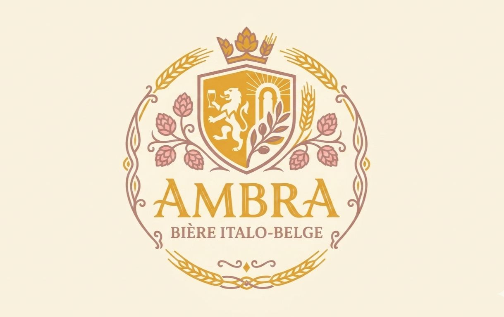

Artisanat · Passion · Excellence
Nos
Chaque bière Ambra est le fruit d'une réflexion approfondie sur les arômes, les textures et les équilibres. Nous brassons en petits lots pour garantir une qualité irréprochable à chaque bouteille.
De la légèreté citronnée de notre Blonde à la profondeur torréfiée de notre Noire, toute la gamme Ambra explore les frontières entre tradition belge et âme méditerranéenne.
Légère et rafraîchissante, notre blonde dévoile des arômes floraux de houblon belge avec une touche agrumate caractéristique de nos citrons amalfitains.
PROFIL AROMATIQUE

L'âme de notre brasserie. Une ambrée complexe où la noblesse de la tradition belge rencontre l'intensité aromatique du café torréfié, cacao noir et caramel grillé. Une bière généreuse avec une belle profondeur et une finale chaleureuse.
PROFIL AROMATIQUE
L'élégance du dessert au verre : une bière ambrée ronde et gourmande aux notes de caramel, fruits secs et une touche délicate d'amande inspirée de l'amaretto.
PROFIL AROMATIQUE

La bière, comme le vin, se marie aux mets
Notre Amalfi Blanche accompagne à merveille les charcuteries italiennes: fruits de mer, burrata, poissons grillés ou une bonne casserole de moules frites.
Notre Napoli Stout se marie parfaitement avec une carbonnade flamande, viande fumée ou un dessert au chocolat.
Notre Amaretto Amber est idéale avec fromage d'abbaye, boulettes sauce liégeoise ou un tiramisù.
Notre Sélection de Pâtisseries
Afin de sublimer la finesse et les notes aromatiques de nos bières les plus délicates, nous avons le plaisir de vous proposer un choix de desserts pensés pour la dégustation :
• Le Tiramisu traditionnel
• Le Baba classique
• Notre Panna Cotta ou Tarte de saison
Notre équipe se tient à votre entière disposition pour vous suggérer l'accord parfait.

Rejoignez notre communauté de passionnés et recevez nos actualités, nouvelles cuvées et invitations en avant-première.
Notre Histoire